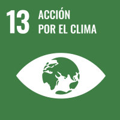
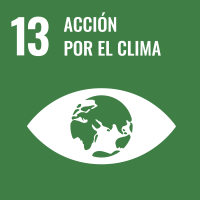

SOBRE NOSOTROS
Esta página está creada por Sandra Martínez Morcillo, estudiante de DAW en el I.E.S Pedro Jiménez Motoya.
En TodoBike, ofrecemos una amplia gama de bicicletas de alta calidad para todos los gustos y niveles, desde bicicletas urbanas y de montaña hasta modelos de competición. Además, contamos con una extensa selección de complementos y accesorios para ciclistas, como cascos, guantes y más, todo lo necesario para que disfrutes al máximo de tu pasión por el ciclismo.
Ya seas un ciclista principiante o un experto, en nuestra tienda encontrarás los mejores productos de las marcas más reconocidas, con la garantía de calidad y el mejor servicio. Navega por nuestras categorías, descubre ofertas exclusivas y encuentra lo que necesitas para tu próxima aventura sobre dos ruedas.
¿POR QUÉ ELEGIRNOS?

¿QUÉ ODS CUMPLE?
Esta tienda cumple con 11 de los 17 ODS, entre ellos están:


 


¡Haz tu pedido hoy y empieza a pedalear con los mejores productos en TODOBIKE!
Creado por Sandra Martínez Morcillo, alumna de 1º de DAW en el I.E.S Pedro Jiménez Montoya.